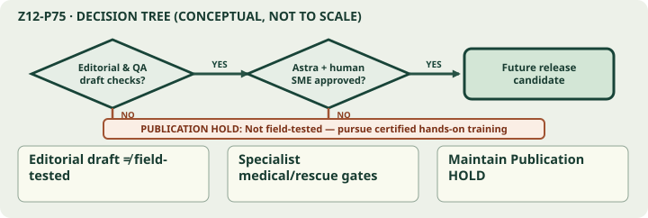

Z12-P75 · Extreme environments · New manuscript
Maintain qualified rescue, clinical and environmental review holds on all Z12 drafts
Ensure readers and reviewers understand that Z12 extreme-environment drafts are NOT field-tested or approved for public field use.
When it applies · Governance and safety boundary across all 75 pages of Z12 Extreme Environments and adapted B012/B013 material.
Equipment · Card evidence drawers, Astra Escalation Register and official agency/clinical training courses.

Actions
- Recognize that high-consequence environmental procedures—including ice self-rescue, shore witness rescue, cold-water immersion care, avalanche avoidance, high-altitude HAPE/HACE recognition and maritime distress—carry fatal risk if misapplied and remain strictly on **publication: HOLD**.[X18, X02, X09, E23, X05]
- Never represent AI-assisted editorial drafts, adapted historical B012/B013 cards or conceptual schematics as field-tested, laboratory-certified or independently approved by rescue or clinical specialists.[ED, X18, T04]
- Pursue formal hands-on certified training (wilderness first aid, avalanche Level 1, coastal/maritime boating safety, swiftwater/ice rescue) from qualified human instructors before entering extreme environments.[E23, X05, T01, ED]
Failure recognition · Treating an unapproved draft encyclopedia card as a substitute for certified avalanche, boating, desert or wilderness medical training.[E23, X05, T01]
Verify · Confirm every Z12 card displays its `Publication hold` banner, required specialist reviewer domain and traceable primary agency citations.[ED, X01, X09]
Stop or change course · Do NOT authorize public field use or merge Z12 drafts into a published edition until qualified human domain specialists, rescue professionals and medical reviewers sign off explicitly.[ED, X18, X09, T04]
Evidence and editorial notes
- E23 · National Avalanche Center / USFS · Avalanche Encyclopedia (current web edition)
- Section: Avalanche Encyclopedia > Terrain, Slopes, and Runout Zones · Conditions: Winter travel and camping in snowy sloped or mountain terrain
Support: Avalanches can initiate on slopes roughly 30 to 45 degrees and travel far into flatter runout zones below; avoid camping beneath steep snow slopes, cornices, or gullies without formal avalanche training and current forecasts.
Limitations: Gentle flat valley floors can still sit inside runout paths beneath steeper upper slopes. · Conflicting evidence: None; strictly excludes unvalidated snow-shelter placement in avalanche terrain.
Editorial note: Enforces avalanche-terrain exclusion on all winter shelter cards. · Specialist reviewer: Avalanche safety and winter shelter
Primary source · checked 2026-11-24 - T01 · American Red Cross · First Aid Steps (current web edition)
- Section: First Aid Steps > Check the scene; check the person · Conditions: Lay responder in United States; assess safety before contact
Support: Check scene safety, responsiveness, breathing and immediately life-threatening conditions.
Limitations: Lay guidance does not replace advanced clinical or rescue protocols. · Conflicting evidence: None; universal first-response opening gate.
Editorial note: Anchors scene-safety-first rule across Z01. · Specialist reviewer: EMS and wilderness medicine
Primary source · checked 2026-11-24 - T04 · Wilderness Medical Society · Frostbite clinical practice guideline 2024 update (2024)
- Section: Field treatment scenarios and Table 1 · Conditions: Suspected frostbite outside immediate medical care
Support: Avoid refreezing. Whether to actively thaw depends on ability to keep tissue thawed and evacuate. Detailed treatment requires clinical review.
Limitations: Field assessment cannot reliably determine final tissue depth. · Conflicting evidence: Supersedes outdated rubbing or snow-pack thawing myths.
Editorial note: Retained for cross-zone cold-injury stop boundaries. · Specialist reviewer: Wilderness medicine
Primary source · checked 2026-11-24 - X01 · Minnesota DNR · General Ice Thickness Guidelines (current web edition)
- Section: General Ice Thickness Guidelines > New Clear Ice Only · Conditions: Minnesota lakes and ponds during stable winter freezing
Support: Agency thickness guidelines apply ONLY to new, clear solid ice and are NEVER a guarantee of safety; white snow-ice is roughly half as strong, and currents, springs, inlets, outlets and snow cover create hidden thin zones.
Limitations: No ice is 100% safe; one drilled thickness check does not clear an entire crossing route. · Conflicting evidence: Directly reconciles B013 P01–P05, P11 and P17 with MN DNR warnings.
Editorial note: Enforces non-guarantee ice boundaries across Z12. · Specialist reviewer: Ice safety and winter search and rescue
Primary source · checked 2026-11-24 - X02 · Minnesota DNR · Cold Water Safety (current web edition)
- Section: Cold Water Safety > Cold Shock, Swim Failure and Hypothermia · Conditions: Immersion in water below 70°F (especially below 50°F / winter ice water)
Support: Cold-water immersion triggers immediate involuntary gasp and hyperventilation (cold shock in the first 1–3 minutes), followed by rapid swimming failure (within ~10–15 minutes) before core hypothermia develops; wearing a fastened life jacket keeps the airway above water.
Limitations: Strong swimmers drown rapidly from cold shock and muscle incapacitation without flotation. · Conflicting evidence: Refutes myth that hypothermia is the only immediate cold-water killer.
Editorial note: Core physiological evidence for Z12 ice-breakthrough and maritime immersion cards. · Specialist reviewer: Cold-water rescue and wilderness medicine
Primary source · checked 2026-11-24 - X05 · US Coast Guard · Boating Safety Resource Center (current web edition)
- Section: Boating Safety > Float Plans, VHF-DSC, Weather and Abandon-Ship Limits · Conditions: Inland large lakes, coastal waters and maritime travel
Support: File a float plan, monitor marine weather and VHF Channel 16/DSC where equipped, stay with a swamped buoyant hull when safer than swimming to distant shore and maintain visual/electronic distress signals.
Limitations: Open-water craft operations require vessel-specific seamanship beyond general survival cards. · Conflicting evidence: None; aligns with NOAA-MARINE and NOAA-SARSAT.
Editorial note: Anchors maritime communication, hull-stay and distress cards in Z12. · Specialist reviewer: Maritime safety and USCG-aligned review
Primary source · checked 2026-11-24 - X09 · CDC · Travel to High Altitudes (current web edition)
- Section: Travel to High Altitudes > Acclimatization, AMS, HAPE and HACE · Conditions: Mountain travel above ~8,000 feet (2,500 meters)
Support: Ascend gradually to acclimatize; recognize Acute Mountain Sickness (headache, nausea, fatigue) and life-threatening HAPE (shortness of breath at rest, cough) or HACE (ataxia, confusion), for which immediate descent and medical care are essential.
Limitations: Physical fitness does not prevent altitude illness; individual susceptibility varies unpredictably. · Conflicting evidence: None; aligns with NPS-MTN.
Editorial note: Core physiological evidence for Z12 mountain-altitude cards. · Specialist reviewer: Mountain medicine and high-altitude safety
Primary source · checked 2026-11-24 - X18 · Minnesota DNR · Ice Safety (current web edition)
- Section: Ice Safety > Self-Rescue and Witness Reach-Throw-Don't-Go · Conditions: Cold-water ice breakthrough on frozen lakes or rivers
Support: If you fall through ice, control breathing, turn back toward the direction you came from (known thicker ice), kick horizontally onto the shelf using ice picks if carried, roll away without standing immediately; witnesses MUST stay off weak ice, call 911 and use reach/throw aids rather than walking out.
Limitations: Ice rescue carries extreme drowning risk for untrained rescuers; dry practice and qualified rescue review are mandatory. · Conflicting evidence: Directly aligns with B013 P06–P08 and P14; carries high-consequence specialist review hold.
Editorial note: Anchored in Z12 ice-breakthrough cards and logged in the Astra escalation register. · Specialist reviewer: Ice rescue, EMS and wilderness medicine
Primary source · checked 2026-11-24
Source lineage · Editorial governance, WMS and agency safety limits; new manuscript · Classification · New manuscript.